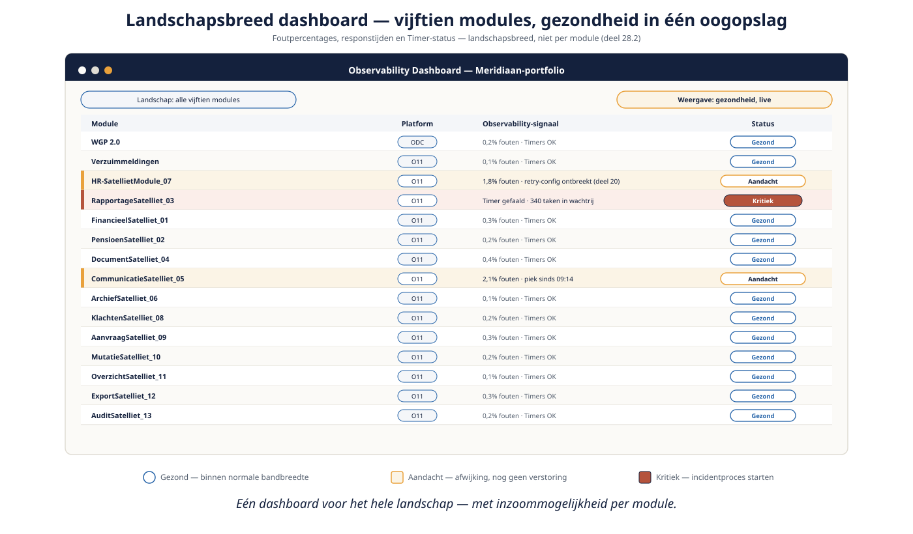
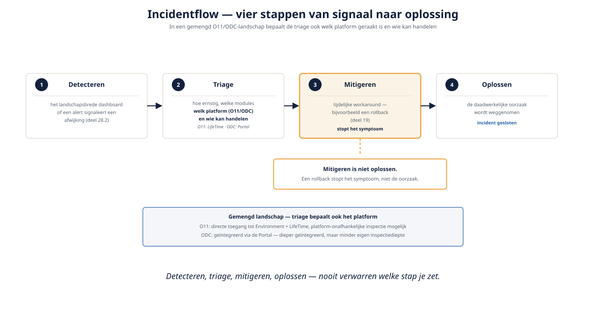

Deel 28 — Beheersing in productie: observability, incidenten, capaciteit
Slidedeck · Ductus-cursus OutSystems · Niveau 3 — Expert · deel 28 van 30 · 15 slides
Slide 1 — Title: OutSystems: Leidend
OutSystems: Leidend
Deel 28 — Beheersing in productie: observability, incidenten, capaciteit
Slide 2 — Statement: Van bouwen naar draaiend houden.
Van bouwen naar draaiend houden.
Slide 3 — Section: Observability
Observability
Slide 4 — Bullets: Verder dan performance-monitoring
Verder dan performance-monitoring
- Landschapsbreed, niet per module
- Foutpercentages, responstijden, Timer-status
- Eén dashboard, met inzoommogelijkheid

Slide 5 — Section: Incidentmanagement
Incidentmanagement
Slide 6 — Bullets: Vier stappen
Vier stappen
1. Detecteren
2. Triage
3. Mitigeren
4. Oplossen

Slide 7 — Statement: Mitigeren is niet oplossen.
Mitigeren is niet oplossen.
Een rollback stopt het symptoom.
Slide 8 — Opdracht: Opdracht 28.1 — Welke stap is dit?
Opdracht 28.1 — Welke stap is dit?
Drie momenten in een incident.
→ Werkboek 28.1
Slide 9 — Opdracht: Baan A / Baan B
Baan A / Baan B
A — Incidentrespons oefenen in O11
B — Incidentrespons oefenen in ODC
→ Werkboek, eigen baan
Slide 10 — Table: Incidentrespons: O11 versus ODC
Incidentrespons: O11 versus ODC
| O11 | ODC | |
|---|---|---|
| Toegang | Direct tot Environment + LifeTime | Geïntegreerd via Portal |
| Diepte | Platform-onafhankelijke inspectie mogelijk | Afhankelijk van wat de Portal toont |
Slide 11 — Section: Capaciteitsplanning
Capaciteitsplanning
Slide 12 — Bullets: De Wtp-piek is voorspelbaar
De Wtp-piek is voorspelbaar
- O11: infrastructuurbeslissing met doorlooptijd
- ODC: vloeiender, maar met directe kostenimplicatie
- Vooraf plannen, niet reactief oplossen
Slide 13 — Opdracht: Reflectieopdracht 28.2
Reflectieopdracht 28.2
Waarom niet "gewoon oplossen" als de piek zich voordoet?
→ Werkboek 28.2
Slide 14 — Bullets: Kernpunten deel 28
Kernpunten deel 28
- Observability: landschapsbreed, continu
- Incidentproces: detecteren → triage → mitigeren → oplossen (nooit verwarren)
- Gemengd landschap: triage bepaalt ook welk platform en wie kan handelen
- Capaciteitsplanning: voorafgaand aan een voorspelbare piek, niet reactief
Slide 15 — Section: Volgende deel: De tech lead als tegenspraak
Volgende deel: De tech lead als tegenspraak